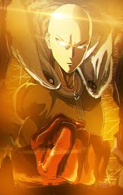
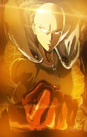

WHAT IS ANIME?
| Demon slayer | ✡️✡️✡️✡️✡️✡️✡️✡️ |
| Attack on titan | ✡️✡️✡️✡️✡️✡️✡️ |
| Black clover | ✡️✡️✡️✡️✡️✡️✡️✡️✡️ |
| Rokka the brave six | ✡️✡️✡️✡️✡️✡️ |
| High school dxd | ✡️✡️✡️✡️✡️✡️✡️✡️✡️ |
| Full metal panic | ✡️✡️✡️✡️✡️✡️ |
| Undefeated bahamut chronicles | ✡️✡️✡️✡️✡️✡️✡️✡️ |
| Dragon ball super | ✡️✡️✡️✡️✡️✡️✡️ |
| Bleach | ✡️✡️✡️✡️✡️✡️✡️✡️✡️✡️ |
| Naruto | ✡️✡️✡️✡️✡️✡️✡️✡️✡️✡️ |
| One piece | ✡️✡️✡️✡️✡️✡️✡️✡️✡️✡️ |
| Jojo bizzare adventures | ✡️✡️✡️✡️✡️ |
| My hero academia | ✡️✡️✡️✡️✡️✡️✡️✡️ |